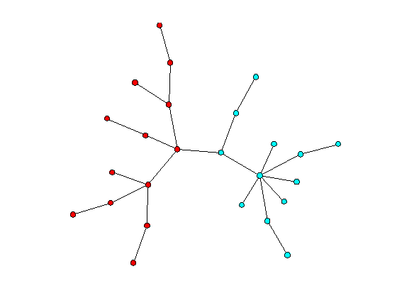

Splitting the vertex set of a graph
We demonstrate how to split the vertex set of a graph into two parts using the split method. The goal is to separate the vertices of the graph into two natural clusters. The splitting is based on the Fiedler vector of the Laplacian matrix.
Contents
Create a random tree
g = graph; random_tree(g,25);
Find an embedding for the tree
Note: This requires the Optimization Toolbox
distxy(g);
Optimization terminated: relative function value changing by less than OPTIONS.TolFun. Embedding score = 28.62 Elapsed time is 3.134483 seconds.
Partition the vertices
p = split(g)
{ {1,2,3,4,8,9,13,15,16,17,20,22,24} {5,6,7,10,11,12,14,18,19,21,23,25} }
Draw the result
cdraw(g,p);
Partition a grid graph
grid(g,3,11);
p = split(g);
clf; % erase the previous drawing
cdraw(g,p)

Release storage
free(g);